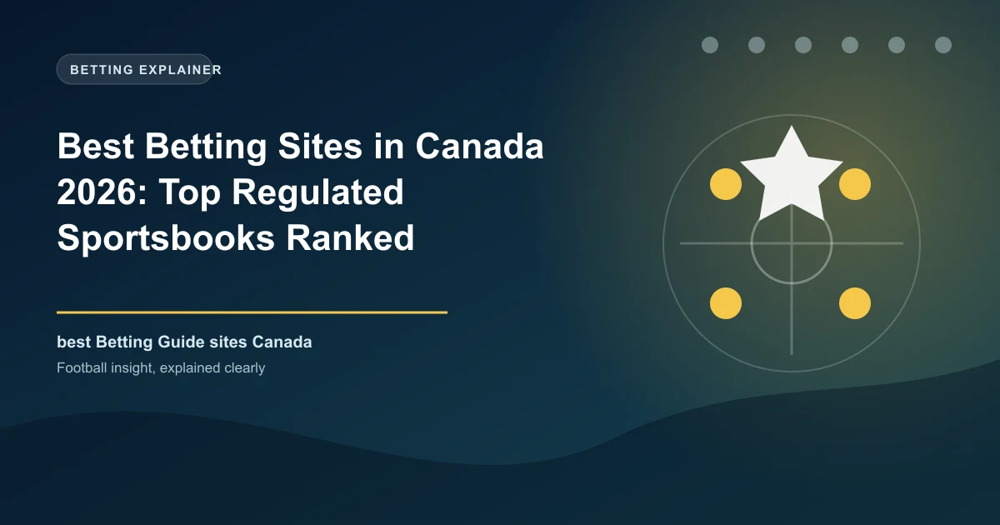

Best Betting Sites in Canada 2026: Top Regulated Sportsbooks Ranked

Canada legalised single-game betting in 2021, Ontario built a fully regulated market in 2022, and Alberta followed in July 2026. Here are the ten best sportsbooks for Canadian bettors right now.

Canadian sports betting has been transformed in five years. The federal Criminal Code amendment in Bill C-218 (summer 2021) legalised single-game sports betting, Ontario launched the country's first fully regulated iGaming market on 4 April 2022, and Alberta's regulated market followed on 13 July 2026. What was a grey-market free-for-all is now a genuine regulated industry in the provinces that matter most.
The result for bettors: real consumer protection. Ontario-registered operators are registered with the Alcohol and Gaming Commission of Ontario (AGCO) and operate under agreements with iGaming Ontario, meaning fair-play standards, verified payouts, and responsible-gambling duties with a regulator who will actually take a complaint. In the rest of the country, trusted international operators continue to serve punters under reputable licences alongside provincial platforms.
This guide ranks the ten best sportsbooks for Canadian bettors in 2026, judged on odds, NHL and CFL coverage, Interac banking, payouts and app quality.
Canada Betting at a Glance
| Factor | Detail |
|---|---|
| Currency | Canadian Dollar (CAD / $) |
| Federal law | Bill C-218 legalised single-game betting (2021) |
| Regulated provinces | Ontario (2022), Alberta (July 2026); others via provincial lotteries |
| Key markets | NHL, CFL, NBA, MLB, soccer, tennis |
| Primary payment | Interac e-Transfer (most popular), cards, bank transfer |
| Legal age | 19 in Ontario (18 in Alberta) |
| Grey market | Trusted offshore operators accepted in most other provinces |
Regulation: What the 2026 Map Looks Like
Ontario remains the flagship: more than 30 licensed online sportsbooks operate there under AGCO registration and iGaming Ontario operating agreements, giving residents a genuine competitive market with names like bet365, BetMGM, DraftKings, FanDuel, Betway, BET99 and Sports Interaction. Alberta's regulated market launched on 13 July 2026 under the iGaming Alberta Act, with BetMGM Alberta and DraftKings Alberta among the early entrants (18+ there). In the other provinces, punters typically choose between the provincial lottery platform (PlayNow in B.C., for example) and trusted grey-market operators such as bet365, which hold valid international licences with a long payout record in Canada.
How We Ranked the Sites
Sites were scored on odds margins, hockey and football coverage depth, Interac deposit and payout speed, bonus value and fairness, app stability, and — for Ontario users — AGCO registration status.
The Top 10 Betting Sites in Canada, Ranked
1. bet365 — Best Overall
bet365 is the most complete sportsbook available to Canadians. It is AGCO-registered in Ontario, among the first into Alberta's regulated market, and it serves the rest of the country under its Malta and Gibraltar licences with two decades of reliable payouts. Welcome options include a Bet $10, Get $50 bonus-bets deal or a $1,000 First Bet Safety Net, and the product is defined by the industry's best odds pricing, live streaming and in-play depth. Maximum in-play markets coverage of any operator in the country.
- Welcome: Bet $10, Get $50 in bonus bets, or $1,000 First Bet Safety Net
- Min deposit: $10
- Payouts: within 24 hours typically
2. Sports Interaction — Canadian Original
Sports Interaction has served Canadians since 1997 and is among the most trusted names in the country, licensed in British Columbia, Alberta, Ontario, Saskatchewan, Manitoba, Quebec and Nova Scotia. It stands out for early prop markets, 24/7 support and fee-free Interac banking with a $10 minimum. AGCO-registered in Ontario since the market opened.
- Welcome: 125% deposit match up to $750
- Best for: Canadian-first service, early prop markets
3. BET99 — Best Canadian Promos
BET99 is a Canadian-founded sportsbook with one of the strongest daily-promotions engines in the country, plus a polished app and deep NHL coverage. AGCO-registered in Ontario, it offers an Encore-style first-bet refund up to $800 and consistently strong player props.
- Welcome: First Bet Encore up to $800
- Best for: daily promos, NHL props
4. BetMGM — Ontario + Alberta Leader
BetMGM is a flagship of both regulated markets — live in Ontario since launch and among the first Alberta brands — with sharp live-betting odds, deep NHL and NBA coverage and an excellent app. MGM's Canadian entry combines global muscle with genuine local licensing.
- Best for: live betting, NHL/NBA, regulated markets
5. DraftKings — App and Parlays
DraftKings brought a gold-standard DFS and sportsbook app into Ontario and now Alberta, with the best parlay experience and one of the freshest user interfaces in Canada. Its daily promotions and same-game parlays keep casual and sharp bettors engaged alike.
- Best for: app quality, parlays, markets
6. FanDuel — US Juggernaut
FanDuel's Ontario entry is a strong all-rounder: excellent bonus-bet offers, a clean app and heavy coverage of the four major North American leagues plus hockey. Its odds on NFL and NBA fixtures are consistently among the best on the board.
- Best for: NBA/NFL pricing, welcome offers
7. Betway — Sports Coverage
Betway holds a strong position in both Ontario and Alberta with some of the widest sports coverage among Canadian operators and a 5-tier loyalty program. It is particularly strong on MLB and international football, with smooth Interac banking and dependable payouts.
- Best for: MLB, sports breadth, loyalty
8. ToonieBet — Fast-Rising Canadian
ToonieBet is a proudly Canadian brand with a strong live-betting product and a sleek interface, growing fast in Ontario. It is the pick for bettors who want a modern, well-designed app with genuinely competitive live markets and quick payouts.
- Best for: live betting, modern interface
- Min deposit: $30
9. TonyBet — Dual Sportsbook-Casino
TonyBet combines a strong sportsbook and casino with one shared wallet, competitive MLB and soccer pricing, and 24-hour-plus payouts. Its dual-product approach makes it popular with bettors who want both halves of the entertainment in one account.
- Best for: sportsbook + casino combo, MLB/soccer
- Min deposit: $15
10. Stake — Crypto Withdrawals
Stake rounds out the ranking for crypto users: crypto withdrawals reach your wallet within about 15 minutes, Interac deposits are instant, and the welcome runs to a 200% deposit match up to $4,200. It is a proven, licence-backed operator with strong in-play.
- Welcome: 200% up to $4,200
- Best for: crypto payouts, in-play
Quick Comparison Table
| Site | Best For | Ontario | Min Deposit | Payouts |
|---|---|---|---|---|
| bet365 | Overall | Yes | $10 | Within 24h |
| Sports Interaction | Canadian service | Yes | $10 | Within 24h |
| BET99 | Daily promos | Yes | $20 | Within 24h |
| BetMGM | Live betting | Yes | $10 | Within 24h |
| DraftKings | App & parlays | Yes | $10 | Within 24h |
| FanDuel | NBA/NFL pricing | Yes | $10 | Within 24h |
| Betway | MLB & breadth | Yes | $10 | Within 24h |
| ToonieBet | Live betting UX | Yes | $30 | 12–24h |
| TonyBet | Casino combo | Yes | $15 | 6–24h |
| Stake | Crypto payouts | Yes | $10 | Crypto: ~15 min |
Payment Methods: Interac and Beyond
Interac e-Transfer is the most popular Canadian betting payment — instant deposits, fee-free in most cases, and withdrawals within 24 hours at every major operator. Debit and credit cards are accepted broadly (including Instadebit), and Apple Pay appears at several Ontario books. Stake is the standout for crypto, with withdrawals in about 15 minutes. Whatever you choose, keep the registered account name identical to your Interac name to avoid payout friction.
| Method | Deposit | Withdrawal Speed |
|---|---|---|
| Interac e-Transfer | Instant | Within 24h |
| Debit / credit cards | Instant | 1–3 days |
| Instadebit | Instant | Within 24h |
| Crypto (Stake) | Instant | ~15 min |
Pick Your Book by What You Watch
| If You Want... | Top Choice | Runner-Up |
|---|---|---|
| NHL hockey depth | bet365 | BET99 |
| CFL coverage | bet365 | Sports Interaction |
| NBA/NFL sharp lines | FanDuel | DraftKings |
| MLB live betting | Betway | TonyBet |
| Canadian service | Sports Interaction | BET99 |
| Fastest payouts | Stake (crypto) | bet365 |
| Best mobile app | DraftKings | ToonieBet |
How to Choose Your Canadian Sportsbook
If you live in Ontario or Alberta, start with the AGCO-registered / licensed-operators list and pick from it — that is your safety baseline. For most punters bet365 gives the deepest all-round product; NHL-focused bettors can add BET99 for props, CFL fans should keep Sports Interaction close, and American-league parlay players should add DraftKings or FanDuel. In provinces without a regulated market, choose from the well-reputed grey-market operators with a long Canadian payout history and set your own deposit limits.
Responsible Gambling in Canada
Every regulated operator must provide deposit limits, time-outs and self-exclusion, and in Ontario they report into provincial harm-minimisation requirements. Set limits before your first deposit, never bet more than you can afford to lose, and treat every wager as money spent on entertainment. If gambling stops being fun, use the operator's exclusion tools or contact provincial support services — these work best when you reach out early.
Frequently Asked Questions
Is sports betting legal in Canada?
Yes. Single-game betting was legalised federally through Bill C-218 in 2021, and each province regulates it. Ontario has a fully regulated market (2022) and Alberta followed in July 2026; other provinces use lottery platforms plus trusted international operators.
Which is the best betting site in Canada?
bet365 is the best all-round sportsbook — AGCO-registered in Ontario, present in Alberta, and unmatched on odds and in-play depth. Sports Interaction is the best Canadian-founded option and BET99 the best for daily promotions.
How do I deposit and withdraw?
Interac e-Transfer is the most popular method: instant deposits and withdrawals within 24 hours at most operators. Cards, Instadebit and Apple Pay are also accepted, and Stake offers crypto withdrawals in about 15 minutes.
What is the legal betting age in Canada?
19 in Ontario and most provinces, but 18 in Alberta. Regulated operators enforce age verification strictly.
Are all betting sites in Canada regulated?
No. Only Ontario and Alberta have fully regulated private markets. In other provinces, reputable international operators serve the grey market under overseas licences — a very different level of protection than an AGCO-registered book.
Put These Principles Into Practice Today
Every strategy on this page is only as good as the markets you apply it to. Check the latest predictions, odds, and in-play opportunities below.
Last updated: August 2026 | By Tochukwu Mesigo |
Build Winning Accumulator Tickets
Generate optimized accumulator combinations from today's data-driven predictions. Set your target odds and get instant ticket suggestions.
Pro Ticket Builder →